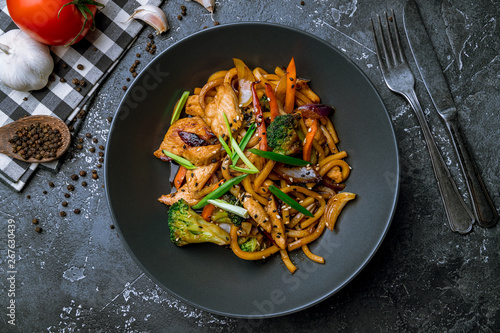

Chicken Wok with Vegetables

Chiken and Vegetables, best combination?
We have come a long way to where we are today.
The same as the chicken making this dish.
Ingredients:
- 1 Big chiken
- 4 Onions
- 3 Red Chilis
- 1 cheap White Wine bottle
- 1 Bottle of soy sauce
Steps:
- Cut the chicken in 6 parts
- Cut the Vegetables in the size of your choice
- Pour half wine bottle into the wok and start heating
- After heating up, add the chicken
- Wait 10 minutes and then add the vegetables
- From times to times pour some soy sauce
- After about 30 minutes the dish should be ready!